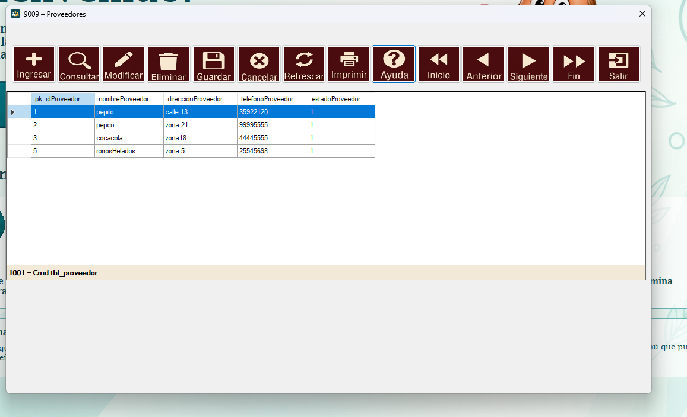

El módulo de Liquidación del Empleado calcula lo que corresponde pagar cuando un colaborador termina su relación laboral: sueldo pendiente, aguinaldo, bono 14, vacaciones no gozadas e indemnización si aplica.
Por ejemplo, un empleado que renuncia el 15 de noviembre recibe la parte proporcional de aguinaldo y bono 14, las vacaciones pendientes y el sueldo de los días laborados. Al guardar, su estado cambia a inactivo en Empleados.
